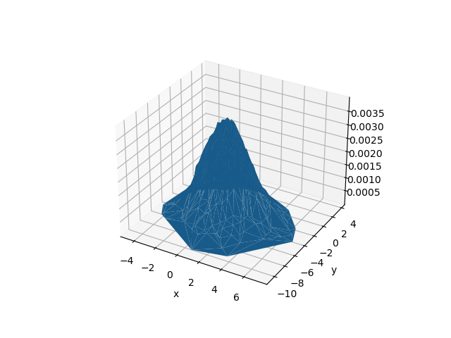

Kernel density
Entropies.NaiveKernel — TypeNaiveKernel(ϵ::Real, method::KernelEstimationMethod = TreeDistance()) <: ProbabilitiesEstimatorEstimate probabilities/entropy using a "naive" kernel density estimation approach (KDE), as discussed in Prichard and Theiler (1995) [PrichardTheiler1995].
Probabilities $P(\mathbf{x}, \epsilon)$ are assigned to every point $\mathbf{x}$ by counting how many other points occupy the space spanned by a hypersphere of radius ϵ around $\mathbf{x}$, according to:
\[P_i( \mathbf{x}, \epsilon) \approx \dfrac{1}{N} \sum_{s \neq i } K\left( \dfrac{||\mathbf{x}_i - \mathbf{x}_s ||}{\epsilon} \right),\]
where $K(z) = 1$ if $z < 1$ and zero otherwise. Probabilities are then normalized.
Methods
- Tree-based evaluation of distances using
TreeDistance. Faster, but more memory allocation. - Direct evaluation of distances using
DirectDistance. Slower, but less memory allocation. Also works for complex numbers.
Estimation
Probabilities or entropies can be estimated from Datasets.
probabilities(x::AbstractDataset, est::NaiveKernel). Associates a probabilitypto each point inx.genentropy(x::AbstractDataset, est::NaiveKernel). Associate probabilitypto each point inx, then compute the generalized entropy from those probabilities.
Examples
using Entropy, DelayEmbeddings
pts = Dataset([rand(5) for i = 1:10000]);
ϵ = 0.2
est_direct = NaiveKernel(ϵ, DirectDistance())
est_tree = NaiveKernel(ϵ, TreeDistance())
p_direct = probabilities(pts, est_direct)
p_tree = probabilities(pts, est_tree)
# Check that both methods give the same probabilities
all(p_direct .== p_tree)See also: DirectDistance, TreeDistance.
Distance evaluation methods
Entropies.TreeDistance — TypeTreeDistance(metric::M = Euclidean()) <: KernelEstimationMethodPairwise distances are evaluated using a tree-based approach with the provided metric.
Entropies.DirectDistance — TypeDirectDistance(metric::M = Euclidean()) <: KernelEstimationMethodPairwise distances are evaluated directly using the provided metric.
Example
Here, we draw some random points from a 2D normal distribution. Then, we use kernel density estimation to associate a probability to each point p, measured by how many points are within radius 1.5 of p. Plotting the actual points, along with their associated probabilities estimated by the KDE procedure, we get the following surface plot.
using Distributions, PyPlot, DelayEmbeddings, Entropies
𝒩 = MvNormal([1, -4], 2)
N = 500
D = Dataset(sort([rand(𝒩) for i = 1:N]))
x, y = columns(D)
p = probabilities(D, NaiveKernel(1.5))
surf(x, y, p.p)
xlabel("x"); ylabel("y")
savefig("kernel_surface.png")
- PrichardTheiler1995Prichard, D., & Theiler, J. (1995). Generalized redundancies for time series analysis. Physica D: Nonlinear Phenomena, 84(3-4), 476-493.